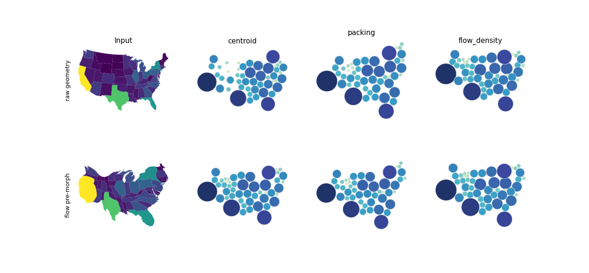
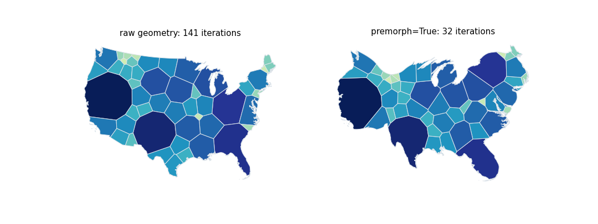

A new how-to compares the symbol layouts (centroid, packing, flow_density) and the Voronoi cartogram on raw and on flow-pre-morphed geometries. The pre-morph saves iterations for packing, flow_density and above all the Voronoi relaxation, and does nothing for centroid; the mosaic layout pre-morphs by itself.
Measurements of the talk (premorph_metrics.py) re-run on the current API.
| layout | input | iterations |
|---|---|---|
| centroid | raw | 9 |
| centroid | pre-morphed | 10 |
| packing | raw | 205 |
| packing | pre-morphed | 164 |
| flow_density | raw | 262 |
| flow_density | pre-morphed | 197 |
| Voronoi | raw | 141 |
| Voronoi | pre-morphed (premorph=True) | 32 |
The flow morph takes 0.6 s. One dataset on one machine: the saving for the symbol layouts is modest and was not tested on other data.
| how-to | docs/how-to/premorph-before-layouts.ipynb, in the navigation (Symbol Cartogram) and the how-to index |
| not taken from the talk | the tile-map comparison: the grid layout showed no benefit I could demonstrate, and the mosaic layout pre-morphs by itself (morph=True), which the how-to says; premorph_figs.py uses a cached flow snapshot and the talk's helper code |
| existing | the gallery example plot_voronoi_premorph.py shows only the result of premorph=True |
The notebook runs without error; the docs build runs in CI.

The three symbol layouts on the raw (top) and the pre-morphed (bottom) geometries.

The Voronoi cartogram on the raw geometry and with premorph=True: the cells keep the outline of the flow cartogram, in 32 instead of 141 iterations.